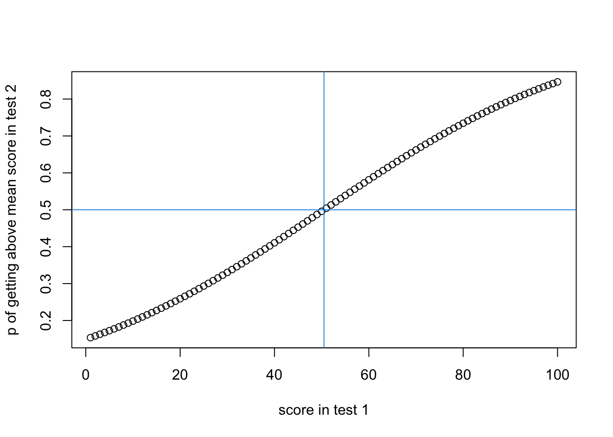

The aim of logistic regressions is to try to predict a binary outcome. For example, will an individual pass an exam? You can have continuous predictors (e.g. the amount of time revising for an exam), and categorical predictors (although for a simple logistic regression you could simply do a Chi-Square test if you only have one or two predictors and they are both categorical). Let’s start with the basics, what distributions of likelihood we expect with logistic regressions.
Likelihood distribution
Let’s imagine we want to know how likely someone is to perform above average in test 2, based on their score in test 1. We will assume that someone who has the mean score in test 1 will have a 50% chance of performing above average in test 2. The question is how much does your likelihood of performing above in test 2 go up or down depending on how far away from the mean your score was in test 1?
\(x\) is the individual’s score in test 1. \(x\) is a continuous variable.
\(p(x)\) is the likelihood of getting above the mean in test 2, given the individual’s score of \(x\) in test 1. \(p(x)\) is thus the likelihood of a dichotomous outcome, above mean vs. below mean (note that if it is possible to score the exact mean, then you would need to change this outcome to be make it dichotomous, e.g.
above or equal to the mean vs below the mean
above the mean vs below or equal to the mean
). When coding this dichotomous variable we tend to assign a 0 or 1 as the value.
\(e\) is Euler’s number. It’s a specific number similar to \(\pi\) that has magical properties we won’t go into here.
\(\mu\) is the score in test 1 which gives a 50% chance of getting above the mean in test 2. We have assumed this is the mean score of test 1, but this is only as a simplification.
\(s\) is standard deviation in test 1
Let’s imagine there were 100 students doing both tests, and they (miraculously) got every score from 1 to 100. We could plot the likelihood of getting above the mean in test 2 based on their scores in test 1, if we assumed that someone who got the mean score from
this_mu =50.5#this_value = 10this_sd =29# based on the SD of all values from 1 to 100 y_vector =rep(1,100)for(i in1:100){ this_value = i y_vector[i] =1/(1+exp(1)^(-(this_value-this_mu)/this_sd))}plot(y_vector, xlab ="score in test 1",ylab ="p of getting above mean score in test 2")abline(h = .5, v =50.5, col=4)

If we want to update the above figure to visualise the general distribution of likelihood of an outcome depending on SDs, we could summarise the x-axis in SDs:
this_mu =50.5#this_value = 10this_sd =29x_vector =rep(1,100)y_vector =rep(1,100)for(i in1:100){ this_value = i x_vector[i] = (this_value - this_mu)/this_sd y_vector[i] =1/(1+exp(1)^(-(this_value-this_mu)/this_sd))}plot(x_vector, y_vector, xlab ="score in test 1 in SDs from the mean",ylab ="p of getting above mean score in test 2")abline(h = .5, v =0, col=4)
Now this distribution is quite flat, but you can see a small curve in it. Let’s slightly reimagine this so that we’re no longer treating each data point as a participant, but as a score. We’re going to change our calculations to reduce the standard deviation to 10, to reflect the fact that most participants will get a score between 40 and 50 in the original test (see normal distribution for visualisation of this).
this_mu =50.5#this_value = 10this_sd =10y_vector =rep(1,100)for(i in1:100){ this_value = i y_vector[i] =1/(1+exp(1)^(-(this_value-this_mu)/this_sd))}plot(y_vector, xlab ="score in test 1",ylab ="p of getting above mean score in test 2",type ="l")abline(h = .5, v =50.5, col=4)abline(h = .73, v =60.5, col=3) #.73 was selected through trial and error
This figure suggests that someone with a score of 60.5 in test 1 has almost about a 73% chance of scoring above the mean in test 2. Or, if you want to see the shape in terms of how many SDs above or below the mean the score was in test 1:
this_mu =50.5#this_value = 10this_sd =10x_vector =rep(1,100)y_vector =rep(1,100)for(i in1:100){ this_value = i x_vector[i] = (this_value - this_mu)/this_sd y_vector[i] =1/(1+exp(1)^(-(this_value-this_mu)/this_sd))}plot(x_vector,y_vector, xlab ="score in test 1 in SDs from the mean",ylab ="p of getting above mean score in test 2",type ="l")abline(h = .5, v =0, col=4)abline(h = .73, v =1, col=3) #.72 was selected through trial and error
Similarly to the above, if someone is 1 standard deviation above the mean score in test 1, they have about a 73% chance of getting above the mean in test 2.
Whilst this exercise illustrates the broad relationship between a continuous predictor and the likelihood of a binary outcome, there are some considerations.
RESUME HERE WHEN I HAVE FINISHED WITH WIKI example
We have \(\mu\) as the mean of test 1,
Simple logistic regressions
### wiki examplewiki_df <-data.frame(hours =c(0.50,0.75,1.00,1.25,1.50,1.75,1.75,2.00,2.25,2.50,2.75,3.00,3.25,3.50,4.00,4.25,4.50,4.75,5.00,5.50),pass =c(0,0,0,0,0,0,1,0,1,0,1,0,1,0,1,1,1,1,1,1) )
mean(wiki_df$hours * wiki_df$pass)
[1] 1.9
summary(glm(pass ~ hours, data = wiki_df))
Call:
glm(formula = pass ~ hours, data = wiki_df)
Coefficients:
Estimate Std. Error t value Pr(>|t|)
(Intercept) -0.15394 0.18315 -0.840 0.411655
hours 0.23460 0.05813 4.036 0.000775 ***
---
Signif. codes: 0 '***' 0.001 '**' 0.01 '*' 0.05 '.' 0.1 ' ' 1
(Dispersion parameter for gaussian family taken to be 0.1458177)
Null deviance: 5.0000 on 19 degrees of freedom
Residual deviance: 2.6247 on 18 degrees of freedom
AIC: 22.142
Number of Fisher Scoring iterations: 2
\[
p(x) = \frac{1}{1 + e^{-(x-\mu)/s}}
\]
\(\mu\) is whichever value there is a 50% chance of passing.